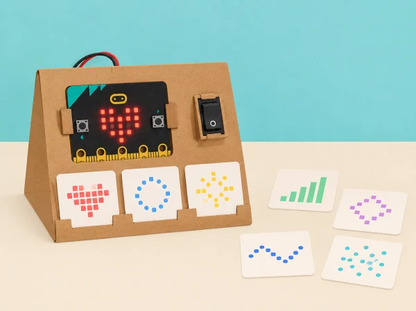
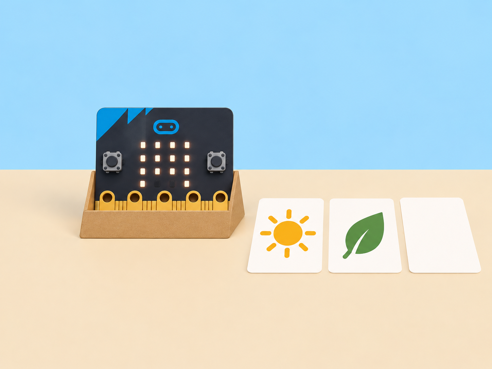

Una aula amb opcions sensorials
🏷️ Disseny accessible
🌱 Situació, repte i intenció
no il·lumina l’aula ni substitueix adaptacions acordades amb la persona i el centre.
La unitat oficial té quatre lliçons per a 11–14 anys i assumeix coneixements previs de pseudocodi i MakeCode. Aquesta versió local conserva l’exploració d’entorns i ajudes, patrons de llum, algoritmes amb entrada/eixida/iteració/selecció i construcció, prova i avaluació; adapta el ritme i l’abast al tercer cicle de primària. No demana a ningú compartir diagnòstic, preferències personals ni experiències de salut.
🎯 Aprenentatges i vocabulari
- Analitzar una rutina fictícia i formular requisits de predictibilitat, control voluntari i aturada.
- Dissenyar patrons visuals regulables amb entrades i eixides que l’usuari puga controlar.
- Programar i provar opcions estàtiques o de moviment suau, sense pampallugues ni estímuls obligatoris.
- Recollir retorn voluntari sobre el prototip i explicar que no és una intervenció clínica ni una solució universal.
🧰 Materials i preparació
BBC micro:bit, MakeCode i cable USB, cartó per a un suport que deixe visibles botons i LEDs, targetes de patrons estàtics, pseudocodi, full d’observació de criteris i un temporitzador opcional. Prepareu dos encàrrecs ficticis contrastats amb una persona adulta de suport educatiu o amb material públic d’accessibilitat; no inventeu una “necessitat típica” d’un diagnòstic. Totes les proves es fan primer amb simulador, en una zona de l’aula on la persona que observa pot apartar-se.
L’ús en una aula real requereix autorització i acceptació voluntària; el valor pedagògic és el procés de disseny, no l’eficàcia clínica del prototip.
Establiu criteris visibles abans de programar: el recurs roman apagat fins que algú l’activa; ofereix una imatge estàtica o un patró lent sense parpelleig; la persona pot canviar d’opció i deixar-la; el patró acaba o torna a un estat neutre; i hi ha una alternativa en paper. Si un criteri no es pot complir amb la placa, es registra com a límit del prototip.
📅 Seqüència didàctica
Explorar entorns i avaluar ajudes (Exploring learning environments)
Fase 1 · Activem i prediem
Llegiu una targeta fictícia amb un objectiu concret, sense etiquetar una persona. Predigueu quina informació de l’entorn pot ajudar a fer més previsible una rutina.
Fase 2 · Explorem i construïm
En un mapa inventat d’aula, marqueu fonts de canvi o informació —inici de tasca, cartell, rellotge o soroll representat amb una targeta—. No augmenteu llum ni soroll real per fer la prova.
Fase 3 · Expliquem i registrem
Compareu tres opcions: pictograma imprés, temporitzador analògic i micro:bit amb una icona. Useu una matriu de criteris: control de la persona, comprensibilitat, facilitat d’aturada, accessibilitat, cost i manteniment; anoteu també què no sabeu.
Fase 4 · Apliquem i millorem
Trieu què provaríeu per a l’encàrrec fictici i què deixareu fora. Reviseu la proposta perquè l’opció impresa, el control de la persona i la possibilitat de declinar-la continuen disponibles.
Fase 5 · Comprovem i reflexionem
Expliqueu qui decideix utilitzar el recurs i com pot no usar-lo.
Dissenyar patrons de llum amb repetició (Light patterns)
Fase 1 · Activem i prediem
Recupereu els criteris de la sessió anterior i comproveu que l’opció impresa i l’estat apagat continuen disponibles. Predigueu com serà el comportament d’un patró estàtic o lent.
Fase 2 · Explorem i construïm
Escriviu pseudocodi amb la seqüència «inici voluntari → mostrar patró → pausa → acabar en neutre». Dissenyeu dues imatges 5 × 5 de contrast clar; eviteu animacions, alternança ràpida i estímuls inesperats.
Fase 3 · Expliquem i registrem
Traslladeu un patró a MakeCode i useu una repetició de durada finita o una pausa perquè el comportament siga previsible. Registreu com correspon cada bloc amb el pseudocodi.
Fase 4 · Apliquem i millorem
Compareu el codi amb els criteris i reviseu-lo si s’activa sol, no acaba en neutre o no és fàcil d’aturar. No demaneu a companys que valoren reaccions corporals ni comoditat personal.
Fase 5 · Comprovem i reflexionem
Comproveu que el patró només comença amb una acció voluntària i acaba de manera previsible.
Algoritme amb entrada, selecció i eixida (Developing pattern algorithms)
Fase 1 · Activem i prediem
Dibuixeu els estats «apagat», «opció 1», «opció 2» i «retorn a neutre». Predigueu què ha de passar quan no es prem cap botó, se’n tria una opció o s’atura.
Fase 2 · Explorem i construïm
Decidiu quin botó tria una opció i quin l’atura o la canvia. El programa no s’activa per llum, soroll, presència o moviment de la persona. Escriviu pseudocodi amb condicions «si/opció», «si/aturada» i una iteració limitada.
Fase 3 · Expliquem i registrem
Una parella fa d’ordinador i executa literalment les instruccions. Completeu una taula amb estat inicial, entrada, eixida esperada, eixida observada i resultat. Incloeu com a mínim: cap entrada (es manté apagat), botó A (mostra l’opció 1), botó B (mostra l’opció 2), una segona pulsació (canvia o manté l’opció segons la regla escrita) i ordre d’aturada (torna a neutre). Afegiu un cas inesperat, com ara deixar passar el temps sense prémer cap botó. No cal registrar noms ni opinions personals.
Fase 4 · Apliquem i millorem
Localitzeu instruccions ambigües o una branca sense eixida i corregiu-les. Torneu a executar els casos afectats per comprovar la revisió.
Fase 5 · Comprovem i reflexionem
Verifiqueu que el diagrama inclou entrada, selecció, eixida i retorn a estat neutre.
Construir, provar i avaluar l’ajuda (Building sensory aids)
Fase 1 · Activem i prediem
Predigueu com es podrà activar i aturar el prototip abans de muntar-lo. Comproveu que la prova es pot fer amb simulador, captura estàtica o paper, sense mirar el patró. Assigneu una persona al programa, una altra a llegir els casos de prova i una tercera a registrar eixides; canvieu els rols abans de la revisió final.
Fase 2 · Explorem i construïm
Col·loqueu la micro:bit en un suport estable sense tapar botons ni matriu LED, o deixeu-la plana si així és més fàcil controlar-la. Implementeu l’algoritme amb entrades, selecció, una repetició limitada i eixida estàtica; no afegiu automatismes que observen la classe.

Fase 3 · Expliquem i registrem
Recorreu els sis casos de la sessió anterior i anoteu eixida esperada i real. Si la taula mostra una diferència, reproduïu només eixe cas, localitzeu si l’error està en l’entrada, la condició o l’eixida i torneu a provar-lo després del canvi. Els comentaris de la galeria seran sobre el disseny, no sobre les reaccions de cap persona.
Fase 4 · Apliquem i millorem
Auditeu els criteris: per defecte queda apagat, l’opció en paper és equivalent per comprendre l’avís i sempre és fàcil deixar el recurs. Reviseu el programa si algun d’aquests punts falla.
Fase 5 · Comprovem i reflexionem
Presenteu el codi, els criteris i un límit conegut.
🧪 Evidències i avaluació
Guardeu l’encàrrec fictici, mapa d’entorn, comparació d’ajudes, criteris, pseudocodi, diagrama d’estats, codi i resultats esperats/reals dels sis casos. Valoreu si l’equip (1) justifica per què una opció pot respondre a l’encàrrec sense dir que convé a tothom; (2) representa entrada, selecció, eixida i repetició; (3) programa el comportament triat i previsible; (4) prova i depura casos, incloent-hi estat apagat i aturada; i (5) comunica una alternativa i un límit.
La rúbrica avalua decisions de disseny i funcionament tècnic, no una resposta sensorial “correcta”.
♿ Participació, accessibilitat i seguretat
L’ajuda és voluntària, no es registra qui l’ha provada i no es demanen testimonis, diagnòstics ni preferències personals. Ningú no ha de mirar el patró: la prova pot fer-se al simulador, amb una captura estàtica o en paper. No useu flaixos, llums intermitents ni so; oferiu sempre control manual, opció neutra i possibilitat de no usar el dispositiu.
Si el centre vol provar un suport en ús real, la decisió ha de comptar amb la persona usuària i el personal responsable, i pot abandonar-se sense justificació. Aquest prototip escolar no es presenta com a teràpia, tractament ni ajust raonable formal.
🔗 Referents i adaptació
Sensory classroom té quatre lliçons per a 11–14 anys i assumeix experiència prèvia amb algoritmes/MakeCode. La primera explora entorns d’aprenentatge i avalua ajudes; la segona escriu pseudocodi amb iteració i patrons de llum; la tercera planifica una ajuda visual amb entrades, eixides, iteració i selecció; la quarta programa, prova, depura i avalua el disseny. Aquesta adaptació manté la progressió i els objectius, incorpora criteris d’ús voluntari, casos de prova i alternativa impresa i redueix l’abast tecnològic al micro:bit.
No reutilitza materials visuals oficials.